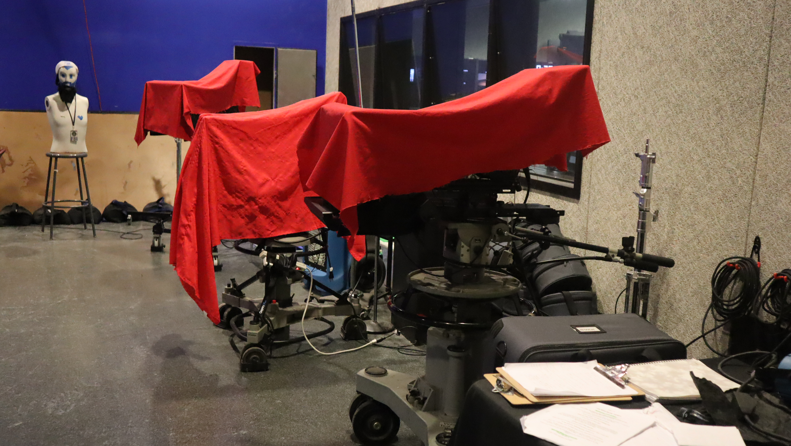

For this picture, I took a photograph and edited it to have a darker, more intense tone inspired by the movie Thirteen. I lowered the brightness, increased the level of color to a bit more green to give it that dark gloomy feeling. I also tired to adjust the shadows to create a moody atmosphere. I also slightly desaturated the colors to reflect the raw, emotional feeling that the film is known for. The purpose of darkening the image was to visually communicate themes like vulnerability, rebellion, and emotional intensity — which are central to Thirteen. The film uses dim lighting and muted tones to reflect the characters’ inner struggles and chaotic experiences as the movie progresses. By editing my photo in a similar way, I wanted to recreate that same sense of tension and realism. Also this building gives me a nostalgic feeling and when I feel nostalgic I feel kind of sad. This editing choice shows how lighting, color grading, and contrast can completely change the mood of an image. Even though the original photo may have looked normal or bright, the darker edit transforms it into something that feels more serious and emotionally charged. This demonstrates how visual techniques in media influence how audiences interpret meaning and emotion.
Back to Home